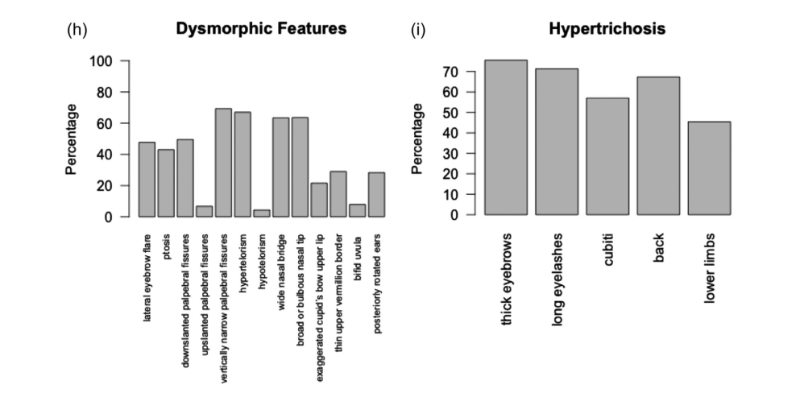

Wiedemann-Steiner Syndrome (WDSTS; OMIM 605130) is a rare autosomal dominant chromatinopathy caused by heterozygous pathogenic variants in KMT2A, encoding a histone H3 lysine 4 (H3K4) methyltransferase. The condition is characterised by global developmental delay, intellectual disability (typically mild to moderate), short stature, hypertrichosis (especially elbow hypertrichosis), characteristic craniofacial dysmorphism, and multi-system concomitants including gastrointestinal, skeletal, cardiac, and genitourinary anomalies. The largest cohort study (n=104) reported developmental delay/intellectual disability in 97% of individuals; most cases arise de novo.
Ask a research question about Wiedemann-Steiner Syndrome. OpenScientist will conduct autonomous deep research using the Disorder Mechanisms Knowledge Base and PubMed literature (typically 10-30 minutes).
Do not include personal health information in your question. Questions and results are cached in your browser's local storage.
name: Wiedemann-Steiner Syndrome
creation_date: "2026-05-16T00:00:00Z"
updated_date: "2026-05-16T12:00:00Z"
references:
- reference: PMID:35617449
title: "Wiedemann-Steiner Syndrome."
tags:
- GeneReviews
category: Mendelian
disease_term:
preferred_term: Wiedemann-Steiner syndrome
term:
id: MONDO:0011518
label: Wiedemann-Steiner syndrome
parents:
- Intellectual disability syndrome
- Mendelian neurodevelopmental disorder
description: >
Wiedemann-Steiner Syndrome (WDSTS; OMIM 605130) is a rare autosomal dominant
chromatinopathy caused by heterozygous pathogenic variants in KMT2A, encoding
a histone H3 lysine 4 (H3K4) methyltransferase. The condition is characterised
by global developmental delay, intellectual disability (typically mild to
moderate), short stature, hypertrichosis (especially elbow hypertrichosis),
characteristic craniofacial dysmorphism, and multi-system concomitants including
gastrointestinal, skeletal, cardiac, and genitourinary anomalies. The largest
cohort study (n=104) reported developmental delay/intellectual disability in 97%
of individuals; most cases arise de novo.
pathophysiology:
- name: KMT2A Loss-of-Function and Disrupted H3K4 Methylation
description: >
Wiedemann-Steiner Syndrome is caused by heterozygous loss-of-function variants
in KMT2A (MLL1), which encodes a histone H3 lysine 4 (H3K4) methyltransferase
that is a core component of the COMPASS-like complex. Haploinsufficiency of
KMT2A disrupts chromatin organisation and reduces H3K4 methylation at
developmentally regulated gene loci, including homeobox gene promoters,
altering transcriptional programmes critical for neurogenesis, craniofacial
development, and growth. This epigenetic dysregulation underlies the
syndrome's broad developmental and somatic phenotypes.
biological_processes:
- preferred_term: chromatin organization
term:
id: GO:0006325
label: chromatin organization
modifier: ABNORMAL
- preferred_term: regulation of transcription by RNA polymerase II
term:
id: GO:0006357
label: regulation of transcription by RNA polymerase II
modifier: ABNORMAL
evidence:
- reference: DOI:10.1002/ajmg.a.62124
reference_title: "Expanding the genotypic and phenotypic spectrum in a diverse cohort of 104 individuals with Wiedemann-Steiner syndrome"
supports: SUPPORT
evidence_source: HUMAN_CLINICAL
snippet: "Wiedemann‐Steiner syndrome (WSS) is an autosomal dominant disorder caused by monoallelic variants in KMT2A and characterized by intellectual disability and hypertrichosis."
explanation: >
The largest multi-centre cohort confirms KMT2A monoallelic loss-of-function
as the cause of WDSTS and characterises the full phenotypic spectrum.
- reference: DOI:10.1017/S1355617722000467
reference_title: "Individuals with Wiedemann-Steiner syndrome show nonverbal reasoning and visuospatial defects with relative verbal skill sparing"
supports: SUPPORT
evidence_source: HUMAN_CLINICAL
snippet: "Wiedemann-Steiner syndrome (WSS) is a rare Mendelian disorder of the epigenetic machinery caused by heterozygous pathogenic variants in KMT2A."
explanation: >
Neuropsychology case series confirms KMT2A haploinsufficiency as the
epigenetic machinery defect driving WSS neurocognitive phenotypes.
- name: Centrosome Dysfunction and Impaired Microtubule Nucleation
description: >
In addition to its nuclear role in H3K4 methylation, KMT2A/MLL1 functions
at the centrosome through its association with WDR5 and the centriolar
satellite protein Cep72. The MLL/WDR5 complex localises to pericentriolar
material and promotes the recruitment of γ-tubulin ring complex (γ-TuRC)
components and structural proteins such as AKAP9. Loss of MLL impairs
microtubule nucleation and regrowth, disrupts mitotic spindle formation, and
leads to misaligned chromosomes during cell division. Patient-derived cells
from WSS individuals exhibit reduced centrosomal localisation of AKAP9,
NEDD1, γ-tubulin, and Cep72, and impaired microtubule nucleation, providing
a cellular mechanism that may contribute to microcephaly and neurodevelopmental
delay in WDSTS.
biological_processes:
- preferred_term: microtubule nucleation
term:
id: GO:0007020
label: microtubule nucleation
modifier: ABNORMAL
- preferred_term: mitotic spindle organization
term:
id: GO:0007052
label: mitotic spindle organization
modifier: ABNORMAL
evidence:
- reference: DOI:10.1126/sciadv.adn0086
reference_title: "MLL/WDR5 complex recruits centriolar satellite protein Cep72 to regulate microtubule nucleation and spindle formation"
supports: SUPPORT
evidence_source: IN_VITRO
snippet: "Loss of the MLL/WDR5 complex affects microtubule nucleation and regrowth. MLL/WDR5 localize to the pericentriolar material and interact with centriolar satellite protein Cep72 and γ-tubulin ring complex proteins (γ-TuRCs)."
explanation: >
Chodisetty et al. demonstrate in patient-derived WSS cells that KMT2A/MLL
localises to centrosomes via WDR5-Cep72, and haploinsufficiency impairs
microtubule nucleation—a non-nuclear mechanism contributing to
neurodevelopmental pathology.
- name: Transcriptomic and Synaptic Dysregulation in Neurons
description: >
In mouse models, Kmt2a haploinsufficiency causes reduced dendritic spine
density and altered H3K4 methylation landscapes in neurons, consistent with
synaptic and transcriptional defects contributing to intellectual disability
and behavioural abnormalities. Double-mutant models combining Kmt2a and
Kdm5c deficiency partially rescue dendritic morphology and behavioural traits,
demonstrating the importance of H3K4me balance in neuronal function.
biological_processes:
- preferred_term: regulation of DNA-templated transcription
term:
id: GO:0006355
label: regulation of DNA-templated transcription
modifier: ABNORMAL
evidence:
- reference: DOI:10.1038/s42003-020-1001-6
reference_title: "Mutually suppressive roles of KMT2A and KDM5C in behaviour, neuronal structure, and histone H3K4 methylation"
supports: SUPPORT
evidence_source: MODEL_ORGANISM
snippet: "Despite opposite enzymatic activities, the two mouse models deficient for either Kmt2a or Kdm5c shared reduced dendritic spines and increased aggression. Double mutation of Kmt2a and Kdm5c clearly reversed dendritic morphology, key behavioral traits including aggression, and partially corrected altered transcriptomes and H3K4me landscapes."
explanation: >
Vallianatos et al. demonstrate in mouse models that KMT2A loss reduces
dendritic spine density and alters H3K4me landscapes, providing mechanistic
insight into the intellectual disability and behavioural phenotypes of WDSTS.
phenotypes:
- name: Global Developmental Delay
description: >
Global developmental delay is present in virtually all individuals with WDSTS
(97% in the largest cohort). Median age at first words is 18 months and
independent walking is achieved at a median of 20 months, with ranges
extending to 60 months. Motor delay is a consistent early feature.
category: Neurological
frequency: VERY_FREQUENT
phenotype_term:
preferred_term: Global developmental delay
term:
id: HP:0001263
label: Global developmental delay
evidence:
- reference: DOI:10.1002/ajmg.a.62124
reference_title: "Expanding the genotypic and phenotypic spectrum in a diverse cohort of 104 individuals with Wiedemann-Steiner syndrome"
supports: SUPPORT
evidence_source: HUMAN_CLINICAL
snippet: "Common clinical features identified in the cohort included: developmental delay or intellectual disability (97%), constipation (63.8%), failure to thrive (67.7%), feeding difficulties (66.3%), hypertrichosis cubiti (57%), short stature (57.8%), and vertebral anomalies (46.9%)."
explanation: >
The Sheppard et al. n=104 multi-centre cohort provides the most robust
frequency estimate (97%) for developmental delay/intellectual disability
in WDSTS.
- name: Intellectual Disability
description: >
Mild to moderate intellectual disability is present in the majority of
individuals with WDSTS. Neuropsychological profiling reveals a characteristic
pattern of prominent nonverbal reasoning and visuospatial deficits with
relative sparing of receptive vocabulary and verbal memory. In a specialized
chromatin clinic cohort, cognitive impairment was distributed as: borderline
21.4%, mild ID 57.1%, moderate ID 21.4%.
category: Neurological
frequency: VERY_FREQUENT
phenotype_term:
preferred_term: Intellectual disability
term:
id: HP:0001249
label: Intellectual disability
evidence:
- reference: DOI:10.1017/S1355617722000467
reference_title: "Individuals with Wiedemann-Steiner syndrome show nonverbal reasoning and visuospatial defects with relative verbal skill sparing"
supports: SUPPORT
evidence_source: HUMAN_CLINICAL
snippet: "The majority of patients performed in the below average to very low ranges in Nonverbal Reasoning, Visual/Spatial Perception, Visuoconstruction, Visual Memory, Attention, Working Memory and Math Computation skills. In contrast, over half the sample performed within normal limits on Receptive Vocabulary, Verbal Memory, and Word Reading."
explanation: >
Ng et al. characterise the specific neurocognitive profile of WSS in 10
patients, demonstrating nonverbal/visuospatial weaknesses with relative
verbal skill sparing—informing educational planning.
- name: Muscular Hypotonia
description: >
Hypotonia is present in approximately 72% of WDSTS individuals and is
significantly associated with loss-of-function (LoF) variants in KMT2A.
It contributes to delayed motor milestones and feeding difficulties in infancy.
Early physical therapy targeting hypotonia and motor delay is recommended.
category: Neurological
frequency: FREQUENT
phenotype_term:
preferred_term: Hypotonia
term:
id: HP:0001252
label: Hypotonia
evidence:
- reference: DOI:10.1097/pep.0000000000000714
reference_title: "Physical Therapy Management of Wiedemann-Steiner Syndrome From Birth to 3 Years"
supports: SUPPORT
evidence_source: HUMAN_CLINICAL
snippet: "Fifty-seven percent of children diagnosed with WSS have hypotonia, and 90% have developmental delay. The diagnosis of WSS should require physical therapy services through early intervention programs due to its high correlation with motor developmental delay and disability."
explanation: >
Mendoza 2020 PT case study highlights the frequency of hypotonia in WSS
and the need for early physical therapy. The larger Sheppard cohort reports 72.4%.
- reference: DOI:10.1002/ajmg.a.62124
reference_title: "Expanding the genotypic and phenotypic spectrum in a diverse cohort of 104 individuals with Wiedemann-Steiner syndrome"
supports: SUPPORT
evidence_source: HUMAN_CLINICAL
snippet: "Hypotonia was associated with loss of function (LoF) variants, and seizures were associated with non‐LoF variants."
explanation: >
Sheppard et al. identify a genotype-phenotype correlation: hypotonia is
specifically associated with loss-of-function KMT2A variants.
- name: Short Stature
description: >
Postnatal growth deficiency and short stature are present in approximately
57-81% of individuals depending on cohort. In Chinese patients, short stature
was the most common feature (90.9%). Growth hormone deficiency has been
reported in a subset, and recombinant human growth hormone (rhGH) therapy
has produced satisfactory height gains in some patients.
category: Growth
frequency: FREQUENT
phenotype_term:
preferred_term: Short stature
term:
id: HP:0004322
label: Short stature
evidence:
- reference: DOI:10.1002/ajmg.a.62124
reference_title: "Expanding the genotypic and phenotypic spectrum in a diverse cohort of 104 individuals with Wiedemann-Steiner syndrome"
supports: SUPPORT
evidence_source: HUMAN_CLINICAL
snippet: "Common clinical features identified in the cohort included: developmental delay or intellectual disability (97%), constipation (63.8%), failure to thrive (67.7%), feeding difficulties (66.3%), hypertrichosis cubiti (57%), short stature (57.8%), and vertebral anomalies (46.9%)."
explanation: >
Short stature is present in 57.8% of the Sheppard multi-centre cohort
of 104 individuals.
- reference: DOI:10.3389/fgene.2023.1085210
reference_title: "Novel variants and phenotypic heterogeneity in a cohort of 11 Chinese children with Wiedemann-Steiner syndrome"
supports: SUPPORT
evidence_source: HUMAN_CLINICAL
snippet: "The most common clinical features were short stature (90.9%) and developmental delay (90.9%), followed by intellectual disability (72.7%)."
explanation: >
Lin et al. report short stature as the most frequent feature (90.9%) in
a Chinese cohort, emphasising cross-ethnic variability in phenotype frequency.
- name: Elbow Hypertrichosis
description: >
Hypertrichosis, particularly involving the elbows (hypertrichosis cubiti), is
a hallmark feature of WDSTS, reported in 57-61% of cohort participants. It
was originally considered pathognomonic but is absent in approximately 39-43%
of cases, including molecularly confirmed diagnoses. Generalised hypertrichosis
may also occur.
category: Integument
frequency: FREQUENT
phenotype_term:
preferred_term: Elbow hypertrichosis
term:
id: HP:0004780
label: Elbow hypertrichosis
evidence:
- reference: DOI:10.1002/ajmg.a.62124
reference_title: "Expanding the genotypic and phenotypic spectrum in a diverse cohort of 104 individuals with Wiedemann-Steiner syndrome"
supports: SUPPORT
evidence_source: HUMAN_CLINICAL
snippet: "Common clinical features identified in the cohort included: developmental delay or intellectual disability (97%), constipation (63.8%), failure to thrive (67.7%), feeding difficulties (66.3%), hypertrichosis cubiti (57%), short stature (57.8%), and vertebral anomalies (46.9%)."
explanation: >
Hypertrichosis cubiti is present in 57% of the n=104 cohort, confirming
it as a frequent but not invariant hallmark of WDSTS.
- reference: DOI:10.1111/cge.13254
reference_title: "Wiedemann-Steiner syndrome as a major cause of syndromic intellectual disability: A study of 33 French cases"
supports: SUPPORT
evidence_source: HUMAN_CLINICAL
snippet: "Hypertrichosis cubiti that was supposed to be pathognomonic in the literature was found only in 61% of our cases."
explanation: >
Baer et al. report hypertrichosis cubiti in 61% of 33 French WDSTS cases,
noting it is not pathognomonic—molecular diagnosis is required.
- name: Feeding Difficulties
description: >
Feeding difficulties are reported in approximately 66% of WDSTS individuals
and contribute to failure to thrive in infancy. Approximately 25% require
nasogastric or gastrostomy tube feeding at some point. Hypotonia and
oropharyngeal coordination difficulties are the primary contributing factors.
category: Gastrointestinal
frequency: FREQUENT
phenotype_term:
preferred_term: Feeding difficulties
term:
id: HP:0011968
label: Feeding difficulties
evidence:
- reference: DOI:10.1002/ajmg.a.62124
reference_title: "Expanding the genotypic and phenotypic spectrum in a diverse cohort of 104 individuals with Wiedemann-Steiner syndrome"
supports: SUPPORT
evidence_source: HUMAN_CLINICAL
snippet: "Common clinical features identified in the cohort included: developmental delay or intellectual disability (97%), constipation (63.8%), failure to thrive (67.7%), feeding difficulties (66.3%), hypertrichosis cubiti (57%), short stature (57.8%), and vertebral anomalies (46.9%)."
explanation: >
Feeding difficulties are present in 66.3% of the n=104 cohort, making
it one of the most frequent gastrointestinal features of WDSTS.
- name: Failure to Thrive
description: >
Failure to thrive is reported in approximately 68% of WDSTS individuals,
reflecting the combined impact of feeding difficulties, hypotonia, and
growth deficiency in infancy and early childhood.
category: Growth
frequency: FREQUENT
phenotype_term:
preferred_term: Failure to thrive
term:
id: HP:0001508
label: Failure to thrive
evidence:
- reference: DOI:10.1002/ajmg.a.62124
reference_title: "Expanding the genotypic and phenotypic spectrum in a diverse cohort of 104 individuals with Wiedemann-Steiner syndrome"
supports: SUPPORT
evidence_source: HUMAN_CLINICAL
snippet: "Common clinical features identified in the cohort included: developmental delay or intellectual disability (97%), constipation (63.8%), failure to thrive (67.7%), feeding difficulties (66.3%), hypertrichosis cubiti (57%), short stature (57.8%), and vertebral anomalies (46.9%)."
explanation: >
Failure to thrive is present in 67.7% of the n=104 Sheppard cohort.
- name: Constipation
description: >
Chronic constipation is a frequent gastrointestinal comorbidity of WDSTS,
reported in approximately 64% of individuals. The aetiology is likely
multifactorial, involving hypotonia-related dysmotility and dietary factors.
Proactive bowel management is an important aspect of care.
category: Gastrointestinal
frequency: FREQUENT
phenotype_term:
preferred_term: Constipation
term:
id: HP:0002019
label: Constipation
evidence:
- reference: DOI:10.1002/ajmg.a.62124
reference_title: "Expanding the genotypic and phenotypic spectrum in a diverse cohort of 104 individuals with Wiedemann-Steiner syndrome"
supports: SUPPORT
evidence_source: HUMAN_CLINICAL
snippet: "Common clinical features identified in the cohort included: developmental delay or intellectual disability (97%), constipation (63.8%), failure to thrive (67.7%), feeding difficulties (66.3%), hypertrichosis cubiti (57%), short stature (57.8%), and vertebral anomalies (46.9%)."
explanation: >
Constipation is present in 63.8% of the n=104 cohort, making it the
most common gastrointestinal comorbidity in WDSTS after feeding difficulties.
- name: Behavioral Abnormalities
description: >
Behavioural issues including hyperactivity, attention deficit, autistic
features (21.3% meet ASD criteria in the largest cohort), and executive
function deficits are frequently reported. Caregivers specifically report
difficulties in emotion regulation. The behavioural phenotype overlaps with
Kabuki syndrome (KMT2D), suggesting shared hippocampal neurogenesis pathways.
category: Psychiatric
frequency: FREQUENT
phenotype_term:
preferred_term: Atypical behavior
term:
id: HP:0000708
label: Atypical behavior
evidence:
- reference: DOI:10.1017/S1355617722000467
reference_title: "Individuals with Wiedemann-Steiner syndrome show nonverbal reasoning and visuospatial defects with relative verbal skill sparing"
supports: SUPPORT
evidence_source: HUMAN_CLINICAL
snippet: "Most caregivers reported deficits in executive functioning, most notably in emotion regulation."
explanation: >
Ng et al. identify executive function and emotion regulation deficits as
a characteristic behavioural feature of WDSTS in a neuropsychological
case series of 10 patients.
- name: Vertebral Anomalies
description: >
Vertebral anomalies are present in approximately 47% of WDSTS individuals,
including fusion anomalies of the cervical spine and other structural
defects. Cervical spine anomalies may lead to immobility or instability
and can complicate airway management during anaesthesia. Orthopaedic
monitoring is recommended.
category: Musculoskeletal
frequency: FREQUENT
phenotype_term:
preferred_term: Abnormality of the vertebral column
term:
id: HP:0000925
label: Abnormality of the vertebral column
evidence:
- reference: DOI:10.1002/ajmg.a.62124
reference_title: "Expanding the genotypic and phenotypic spectrum in a diverse cohort of 104 individuals with Wiedemann-Steiner syndrome"
supports: SUPPORT
evidence_source: HUMAN_CLINICAL
snippet: "Common clinical features identified in the cohort included: developmental delay or intellectual disability (97%), constipation (63.8%), failure to thrive (67.7%), feeding difficulties (66.3%), hypertrichosis cubiti (57%), short stature (57.8%), and vertebral anomalies (46.9%)."
explanation: >
Vertebral anomalies are among the most common structural comorbidities
in WDSTS, present in 46.9% of the n=104 multi-centre cohort.
- name: Scoliosis
description: >
Scoliosis is present in approximately 21% of WDSTS individuals and
is distinct from the broader category of vertebral anomalies (47%).
Scoliosis warrants orthopaedic monitoring and may require intervention
in progressive cases.
category: Musculoskeletal
frequency: OCCASIONAL
phenotype_term:
preferred_term: Scoliosis
term:
id: HP:0002650
label: Scoliosis
evidence:
- reference: PMID:35617449
reference_title: "Wiedemann-Steiner Syndrome."
supports: SUPPORT
evidence_source: HUMAN_CLINICAL
snippet: "Vertebral anomalies or scoliosis in the thoracic or lumbar spine may complicate spinal or epidural anesthesia."
explanation: >
GeneReviews explicitly documents scoliosis and thoracolumbar vertebral
anomalies as clinically significant features in WDSTS, with anaesthetic
implications. Scoliosis affects approximately 21.3% of individuals per
the Sheppard cohort.
- name: Seizures
description: >
Seizures occur in approximately 20% of WDSTS individuals and are
significantly associated with non-loss-of-function (missense/non-LoF) KMT2A
variants, representing a genotype-phenotype correlation. Anti-epileptic
management follows standard protocols.
category: Neurological
frequency: OCCASIONAL
phenotype_term:
preferred_term: Seizures
term:
id: HP:0001250
label: Seizure
evidence:
- reference: DOI:10.1002/ajmg.a.62124
reference_title: "Expanding the genotypic and phenotypic spectrum in a diverse cohort of 104 individuals with Wiedemann-Steiner syndrome"
supports: SUPPORT
evidence_source: HUMAN_CLINICAL
snippet: "Hypotonia was associated with loss of function (LoF) variants, and seizures were associated with non‐LoF variants."
explanation: >
Sheppard et al. identify seizures (~20% prevalence) as associated with
non-LoF (missense) KMT2A variants, providing an important genotype-phenotype
correlation for clinical management.
- name: Cardiac Anomalies
description: >
Congenital cardiac anomalies are present in approximately 36% of WDSTS
individuals. In Chinese cohorts, patent ductus arteriosus (PDA, 57.1%) and
patent foramen ovale (PFO, 42.9%) are particularly frequent cardiac findings.
Cardiac evaluation at diagnosis is recommended.
category: Cardiovascular
frequency: FREQUENT
phenotype_term:
preferred_term: Congenital cardiac anomaly
term:
id: HP:0001627
label: Abnormal heart morphology
evidence:
- reference: DOI:10.3389/fgene.2023.1085210
reference_title: "Novel variants and phenotypic heterogeneity in a cohort of 11 Chinese children with Wiedemann-Steiner syndrome"
supports: SUPPORT
evidence_source: HUMAN_CLINICAL
snippet: "The most frequent imaging features were patent ductus arteriosus (57.1%) and patent foramen ovale (42.9%) in cardiovascular system, and abnormal corpus callosum (50.0%) in the brain."
explanation: >
Lin et al. report high frequency of PDA and PFO in Chinese WDSTS patients,
emphasising the importance of cardiac screening at diagnosis.
- name: Abnormal Corpus Callosum Morphology
description: >
Brain structural anomalies, particularly affecting the corpus callosum, are
found in approximately 50% of WDSTS individuals in imaging studies. These
anomalies likely contribute to the cognitive and behavioural phenotypes.
category: Neurological
frequency: FREQUENT
phenotype_term:
preferred_term: Abnormal corpus callosum morphology
term:
id: HP:0001273
label: Abnormal corpus callosum morphology
evidence:
- reference: DOI:10.3389/fgene.2023.1085210
reference_title: "Novel variants and phenotypic heterogeneity in a cohort of 11 Chinese children with Wiedemann-Steiner syndrome"
supports: SUPPORT
evidence_source: HUMAN_CLINICAL
snippet: "The most frequent imaging features were patent ductus arteriosus (57.1%) and patent foramen ovale (42.9%) in cardiovascular system, and abnormal corpus callosum (50.0%) in the brain."
explanation: >
Lin et al. identify abnormal corpus callosum morphology in 50% of
Chinese WDSTS patients on brain MRI.
- name: Strabismus and Ophthalmologic Anomalies
description: >
Ophthalmologic anomalies are reported in 18-32% of WDSTS individuals,
including strabismus, astigmatism, blepharoptosis (ptosis), myopia,
hyperopia, and amblyopia. Ptosis may require oculoplastic surgical
intervention. Annual ophthalmologic evaluation is recommended.
category: Ophthalmological
frequency: OCCASIONAL
phenotype_term:
preferred_term: Strabismus
term:
id: HP:0000486
label: Strabismus
evidence:
- reference: PMID:35617449
reference_title: "Wiedemann-Steiner Syndrome."
supports: SUPPORT
evidence_source: HUMAN_CLINICAL
snippet: "Other clinical features include feeding difficulties, prenatal and postnatal growth restriction, epilepsy, ophthalmologic anomalies, congenital heart defects, hand anomalies (such as brachydactyly and clinodactyly), hypotonia, vertebral anomalies (especially fusion anomalies of the cervical spine), renal and uterine anomalies, immune dysfunction, brain malformations, and dental anomalies."
explanation: >
GeneReviews documents ophthalmologic anomalies as a recognised clinical
feature of WDSTS; ophthalmologic evaluation annually is recommended.
- name: Obstructive Sleep Apnea
description: >
Obstructive sleep apnea (OSA) occurs in approximately 25% of WDSTS
individuals, likely related to hypotonia and craniofacial features.
Tonsillectomy/adenoidectomy accounts for approximately 20% of those
with OSA. CPAP, BiPAP, or surgical adenotonsillectomy are the primary
management approaches.
category: Respiratory
frequency: OCCASIONAL
phenotype_term:
preferred_term: Obstructive sleep apnea
term:
id: HP:0002870
label: Obstructive sleep apnea
evidence:
- reference: PMID:35617449
reference_title: "Wiedemann-Steiner Syndrome."
supports: SUPPORT
evidence_source: HUMAN_CLINICAL
snippet: "CPAP, BiPAP, or surgical removal of the tonsils and adenoids for those with obstructive sleep apnea"
explanation: >
GeneReviews includes CPAP/BiPAP and surgical adenotonsillectomy as
management for OSA in WDSTS, confirming it as a recognised clinical
feature warranting active screening.
- name: Immune Dysfunction and Recurrent Infections
description: >
Immune dysfunction is documented in 21-54% of WDSTS individuals.
In a tested subset, abnormal immunoglobulin levels were found in 53.8%
and insufficient pneumococcal vaccine response in 30.8%. Recurrent
infections occur in approximately 21% overall. Management includes
consideration of IVIG for low antibody levels and prophylactic antibiotics
for frequent infections.
category: Immunological
frequency: OCCASIONAL
phenotype_term:
preferred_term: Recurrent infections
term:
id: HP:0002719
label: Recurrent infections
evidence:
- reference: PMID:35617449
reference_title: "Wiedemann-Steiner Syndrome."
supports: SUPPORT
evidence_source: HUMAN_CLINICAL
snippet: "consideration of IVIG therapy in those with low antibody levels; consideration of prophylactic antibiotics in those with frequent infections"
explanation: >
GeneReviews recommends IVIG and prophylactic antibiotics for WDSTS
individuals with immune dysfunction, confirming recurrent infections
as a clinically significant and manageable comorbidity.
- name: Genitourinary Anomalies
description: >
Genitourinary anomalies are present in approximately 47% of WDSTS individuals,
including renal anomalies (28.6%, e.g. vesicoureteral reflux, hydronephrosis),
uterine anomalies in females, and cryptorchidism in males. This makes
genitourinary involvement one of the most frequent non-neurological organ
systems affected in WDSTS. Renal ultrasound and urological evaluation are
recommended as part of the diagnostic work-up.
category: Genitourinary
frequency: FREQUENT
phenotype_term:
preferred_term: Abnormality of the genitourinary system
term:
id: HP:0000119
label: Abnormality of the genitourinary system
evidence:
- reference: PMID:35617449
reference_title: "Wiedemann-Steiner Syndrome."
supports: SUPPORT
evidence_source: HUMAN_CLINICAL
snippet: "Other clinical features include feeding difficulties, prenatal and postnatal growth restriction, epilepsy, ophthalmologic anomalies, congenital heart defects, hand anomalies (such as brachydactyly and clinodactyly), hypotonia, vertebral anomalies (especially fusion anomalies of the cervical spine), renal and uterine anomalies, immune dysfunction, brain malformations, and dental anomalies."
explanation: >
GeneReviews lists renal and uterine anomalies as recognised clinical
features of WDSTS. The Sheppard 2021 cohort (n=104) reports renal
anomalies in 28.6% and total genitourinary anomalies in 46.8%,
placing this firmly in the FREQUENT range.
- name: Growth Hormone Deficiency and Pituitary Abnormalities
description: >
Growth hormone deficiency occurs in a subset of WDSTS individuals, and
pituitary gland abnormalities may be identified on MRI in some cases.
Premature adrenarche has also been reported. These endocrine comorbidities
contribute to short stature and warrant endocrinological evaluation, with
growth hormone therapy indicated for confirmed GH deficiency.
category: Endocrine
frequency: OCCASIONAL
phenotype_term:
preferred_term: Growth hormone deficiency
term:
id: HP:0000864
label: Abnormality of the hypothalamus-pituitary axis
evidence:
- reference: PMID:35617449
reference_title: "Wiedemann-Steiner Syndrome."
supports: SUPPORT
evidence_source: HUMAN_CLINICAL
snippet: "growth hormone therapy for those with growth hormone deficiency; thyroid replacement therapy for hypothyroidism"
explanation: >
GeneReviews recommends GH therapy and thyroid replacement for respective
endocrine deficiencies, confirming the frequency and clinical significance
of these endocrine comorbidities in WDSTS.
genetic:
- name: KMT2A
notes: >
Heterozygous pathogenic variants in KMT2A (lysine methyltransferase 2A,
formerly MLL1) on chromosome 11q23.3. In the largest cohort (n=104, 82
distinct variants), variant types include: frameshift 37.8%, nonsense 29.3%,
missense 20.7%, splice-site 11%. 80/82 variants were absent from gnomAD
v2.1.1. De novo origin confirmed in 55.8% (likely an underestimate due to
incomplete parental testing); familial autosomal dominant transmission and
germline mosaicism occur rarely. Genotype-phenotype correlations: hypotonia
associates with loss-of-function variants; seizures associate with non-LoF
(missense) variants. A genome-wide DNA methylation episignature can assist
variant classification (70-100% sensitivity, 100% specificity in independent
validation).
gene_term:
preferred_term: KMT2A
term:
id: hgnc:7132
label: KMT2A
association: Causative
evidence:
- reference: DOI:10.1002/ajmg.a.62124
reference_title: "Expanding the genotypic and phenotypic spectrum in a diverse cohort of 104 individuals with Wiedemann-Steiner syndrome"
supports: SUPPORT
evidence_source: HUMAN_CLINICAL
snippet: "Sixty‐nine of the 82 variants (84%) observed in the study were not previously reported in the literature."
explanation: >
Sheppard et al. characterise the full KMT2A variant spectrum in n=104,
showing high allelic heterogeneity with predominantly novel variants.
- reference: DOI:10.1038/s41431-023-01474-x
reference_title: "Episignatures in practice: independent evaluation of published episignatures for the molecular diagnostics of ten neurodevelopmental disorders"
supports: SUPPORT
evidence_source: HUMAN_CLINICAL
snippet: "Remaining Cornelia de Lange syndrome, KMT2A, KDM5C and CHD7 signatures reached 70–100% sensitivity at best with unstable performances, suffering from heterogeneous methylation profiles among cases and rare discordant samples."
explanation: >
Husson et al. independently validate the KMT2A episignature, demonstrating
its potential but also limitations (70-100% sensitivity, 100% specificity)
for variant interpretation in a diagnostic setting.
treatments:
- name: Physical Therapy
description: >
Early physical therapy (PT) is indicated from infancy for hypotonia and
motor developmental delay. PT through early intervention programmes addresses
motor milestone delays and functional disability. Orthotics and treadmill
walking have been used successfully as adjuncts. Progress should be measured
by functional achievement rather than norm-referenced scores alone.
treatment_term:
preferred_term: physical therapy
term:
id: MAXO:0000011
label: physical therapy
evidence:
- reference: DOI:10.1097/pep.0000000000000714
reference_title: "Physical Therapy Management of Wiedemann-Steiner Syndrome From Birth to 3 Years"
supports: SUPPORT
evidence_source: HUMAN_CLINICAL
snippet: "The diagnosis of WSS should require physical therapy services through early intervention programs due to its high correlation with motor developmental delay and disability."
explanation: >
Mendoza 2020 documents PT from birth to 3 years in a WDSTS case,
demonstrating progression through developmental motor sequences with
early intervention.
- name: Speech and Language Therapy
description: >
Speech and language therapy is indicated for the majority of individuals
with WDSTS given the near-universal presence of speech delay (median age
of first words 18 months in the largest cohort). Therapy targets expressive
language, feeding/swallowing coordination, and pragmatic communication.
treatment_term:
preferred_term: speech therapy
term:
id: MAXO:0000930
label: speech therapy
evidence:
- reference: DOI:10.1002/ajmg.a.62124
reference_title: "Expanding the genotypic and phenotypic spectrum in a diverse cohort of 104 individuals with Wiedemann-Steiner syndrome"
supports: SUPPORT
evidence_source: HUMAN_CLINICAL
snippet: "The median ages at walking and first words were 20 months and 18 months, respectively."
explanation: >
The significant speech delay (median first words 18 months) in the n=104
cohort supports routine speech therapy as a core intervention in WDSTS.
- name: Occupational Therapy
description: >
Occupational therapy addresses fine motor delays, visuospatial difficulties,
activities of daily living, and adaptive equipment needs. The characteristic
neuropsychological profile of WDSTS (nonverbal/visuospatial weaknesses)
makes OT a tailored intervention for functional independence.
treatment_term:
preferred_term: occupational therapy
term:
id: MAXO:0001351
label: occupational therapy
- name: Behavioral and Psychiatric Management
description: >
Management of behavioural problems including ADHD symptoms, autistic
features, and emotion dysregulation with evidence-based behavioural
interventions and, where clinically indicated, pharmacotherapy. Approximately
21% of individuals meet ASD diagnostic criteria, and executive function
deficits are common.
treatment_term:
preferred_term: pharmacotherapy
term:
id: MAXO:0000058
label: pharmacotherapy
- name: Genetic Counseling
description: >
Genetic counselling is recommended for all families with WDSTS. Most cases
are de novo (55.8% confirmed in the largest cohort), conferring low empiric
recurrence risk. However, familial autosomal dominant transmission and germline
mosaicism have been reported, warranting careful parental evaluation and
risk stratification. Prenatal diagnosis is available for familial cases.
treatment_term:
preferred_term: genetic counseling
term:
id: MAXO:0000079
label: genetic counseling
evidence:
- reference: DOI:10.1111/cge.13254
reference_title: "Wiedemann-Steiner syndrome as a major cause of syndromic intellectual disability: A study of 33 French cases"
supports: SUPPORT
evidence_source: HUMAN_CLINICAL
snippet: "We observed autosomal dominant transmission of WSS in 3 families and mosaicism in one family."
explanation: >
Baer et al. document both familial transmission and mosaicism in French
WDSTS cases, underscoring the importance of genetic counselling including
parental testing.
- name: Growth Hormone Therapy
description: >
Recombinant human growth hormone (rhGH) therapy has been trialled in WDSTS
patients with short stature. In a Chinese cohort, two patients treated with
rhGH showed satisfactory height gains, though one experienced acceleration
of bone age. GH deficiency has been documented in a subset of individuals
with WDSTS and should be evaluated in those with severe growth failure.
treatment_term:
preferred_term: hormone modifying therapy
term:
id: MAXO:0000283
label: hormone modifying therapy
evidence:
- reference: DOI:10.3389/fgene.2023.1085210
reference_title: "Novel variants and phenotypic heterogeneity in a cohort of 11 Chinese children with Wiedemann-Steiner syndrome"
supports: SUPPORT
evidence_source: HUMAN_CLINICAL
snippet: "Two patients were treated with rhGH and yielded satisfactory height gains, but one developed acceleration of bone age."
explanation: >
Lin et al. report rhGH use in two WDSTS patients with short stature,
showing benefit but also bone age acceleration as a potential adverse effect.
- name: Anti-Seizure Pharmacotherapy
description: >
Seizures occur in approximately 20% of WDSTS individuals, associated with
non-loss-of-function KMT2A variants. Standard anti-seizure medication by an
experienced neurologist is recommended. Lamotrigine has been used
successfully. Valproate should be used with caution: one WDSTS individual
developed hyperammonemia on valproate, and while this is not specific to
WSS, GeneReviews explicitly flags it as a drug to avoid where possible.
treatment_term:
preferred_term: anti-seizure pharmacotherapy
term:
id: MAXO:0000058
label: pharmacotherapy
therapeutic_agent:
- preferred_term: lamotrigine
term:
id: CHEBI:6367
label: lamotrigine
evidence:
- reference: PMID:35617449
reference_title: "Wiedemann-Steiner Syndrome."
supports: SUPPORT
evidence_source: HUMAN_CLINICAL
snippet: "The authors are aware of one individual with WSS who developed hyperammonemia with the use of the anti-seizure medication valproate. While this is not specific to individuals with WSS, valproate should be used with caution."
explanation: >
GeneReviews explicitly flags valproate caution in WDSTS management,
making this a critical drug-safety note for clinical care of WDSTS
individuals with seizures.
- name: Immunoglobulin Replacement and Infection Prophylaxis
description: >
For WDSTS individuals with documented low antibody levels or immune
dysfunction, IVIG therapy is recommended. Prophylactic antibiotics
should be considered for those with frequent infections. Immunological
evaluation is part of the standard surveillance protocol.
treatment_term:
preferred_term: immunomodulatory pharmacotherapy
term:
id: MAXO:0000058
label: pharmacotherapy
evidence:
- reference: PMID:35617449
reference_title: "Wiedemann-Steiner Syndrome."
supports: SUPPORT
evidence_source: HUMAN_CLINICAL
snippet: "consideration of IVIG therapy in those with low antibody levels; consideration of prophylactic antibiotics in those with frequent infections"
explanation: >
GeneReviews recommends IVIG and prophylactic antibiotics as management
for immune dysfunction in WDSTS.
- name: Supportive Care and Multidisciplinary Management
description: >
Individuals with WDSTS benefit from multidisciplinary follow-up encompassing
neurodevelopmental paediatrics, cardiology (for congenital anomalies),
gastroenterology (feeding, constipation), orthopaedics (vertebral/scoliosis
monitoring), ophthalmology, and immunology. Bowel management for constipation
and nutritional support for feeding difficulties are routine components of care.
treatment_term:
preferred_term: supportive care
term:
id: MAXO:0000950
label: supportive care
Wiedemann–Steiner syndrome (WSS; also written WDSTS) is an autosomal-dominant Mendelian neurodevelopmental disorder caused primarily by heterozygous pathogenic variants in KMT2A (also known historically as MLL), a histone H3 lysine 4 (H3K4) methyltransferase and core component of the epigenetic “writer” machinery. Clinically, WSS features global developmental delay/intellectual disability, postnatal growth deficiency/short stature, hypertrichosis (often including hypertrichosis cubiti), and characteristic craniofacial dysmorphism, with frequent gastrointestinal, skeletal, cardiac, genitourinary, endocrine, and immune comorbidities in cohort studies. The largest multi-continental cohort (n=104) provides robust phenotype frequencies and milestone distributions; recent (2023–2024) advances emphasize neurocognitive profiling, and clinical implementation of DNA methylation episignatures as functional biomarkers for variant interpretation.
Key quantitative points (largest cohort, n=104): developmental delay/intellectual disability 97%, hypotonia 72.4%, failure to thrive 67.7%, feeding difficulties 66.3%, constipation 63.8%, short stature 57.8%, hypertrichosis cubiti 57%, seizures ~20%, cardiac abnormalities ~35.8% among those evaluated; median milestone ages: first words 18 months, independent walking 20 months. (sheppard2021expandingthegenotypic pages 3-4, sheppard2021expandingthegenotypic pages 11-13, sheppard2021expandingthegenotypic pages 6-11)
WSS is a rare autosomal-dominant disorder of the epigenetic machinery (a “chromatinopathy/MDEM”) caused by heterozygous pathogenic variants in KMT2A, characterized by neurodevelopmental impairment (developmental delay/intellectual disability), hypertrichosis (often including hypertrichosis cubiti), facial dysmorphism, and growth deficiency with multi-system congenital anomalies. (ng2023individualswithwiedemannsteiner pages 1-2, foroutan2022clinicalutilityof pages 2-3)
Recent clinical neuropsychology evidence (2023) indicates a characteristic cognitive pattern with prominent nonverbal/visuospatial weaknesses and relative sparing of some verbal skills in a pediatric series, supporting syndrome-specific educational planning. (ng2023individualswithwiedemannsteiner pages 1-2)
Not available in retrieved evidence (tool-limited): Orphanet ID, MeSH descriptor ID, ICD-10/ICD-11 mappings. These should be added from OMIM/Orphanet/ICD resources directly.
The report draws primarily from: - Aggregated cohort studies (e.g., Sheppard et al. multicenter cohort of 104 individuals) (sheppard2021expandingthegenotypic pages 3-4, sheppard2021expandingthegenotypic pages 11-13, sheppard2021expandingthegenotypic pages 6-11) - Disease-focused reviews/case series (e.g., Yu et al. 2022 review; Ng et al. 2023 neuropsychology case series) (yu2022wiedemann–steinersyndromecase pages 7-8, ng2023individualswithwiedemannsteiner pages 1-2) - Clinical diagnostic-method studies (e.g., DNA methylation episignature validation papers) (foroutan2022clinicalutilityof pages 2-3, husson2024episignaturesinpractice pages 1-2) - Real-world specialized clinic cohort (Johns Hopkins Epigenetics and Chromatin Clinic experience) (harris2024fiveyearsof pages 7-9, harris2024fiveyearsof pages 5-7)
Primary cause: Germline heterozygous pathogenic variants in KMT2A leading predominantly to haploinsufficiency (loss-of-function via premature stop codons and/or nonsense-mediated decay is emphasized in reviews and cohort studies). (yu2022wiedemann–steinersyndromecase pages 1-2, sheppard2021expandingthegenotypic pages 4-6)
Direct abstract quote (diagnostic episignature paper): “Wiedemann–Steiner syndrome (WDSTS) is a Mendelian syndromic intellectual disability (ID) condition… caused by pathogenic variants in the KMT2A gene.” (foroutan2022clinicalutilityof pages 2-3)
For a monogenic, typically de novo disorder, “risk factors” are primarily genetic and reproductive: - De novo occurrence is common. In the 104-person cohort, 55.8% were confirmed de novo (likely an underestimate due to incomplete parental testing). (sheppard2021expandingthegenotypic pages 6-11) - Familial transmission and mosaicism occur but are uncommon. Baer et al. reported autosomal-dominant transmission in three families and mosaicism in one family. (baer2018wiedemann‐steinersyndromeas pages 1-2)
Environmental risk factors are not established in the retrieved literature.
No validated protective variants or gene–environment interactions specific to WSS were identified in the retrieved evidence.
The largest available cohort data (n=104) provide the most stable frequency estimates: - Neurodevelopmental: developmental delay/intellectual disability 97%; hypotonia 72.4%; autism spectrum disorder 21.3%; seizures 20.0% (surveyed subset). (sheppard2021expandingthegenotypic pages 3-4, sheppard2021expandingthegenotypic pages 6-11) - Growth/nutrition: failure to thrive 67.7%; feeding difficulties 66.3%; tube feeds 25.5%. (sheppard2021expandingthegenotypic pages 3-4, sheppard2021expandingthegenotypic pages 11-13) - Gastrointestinal: constipation 63.8%. (sheppard2021expandingthegenotypic pages 3-4) - Growth: short stature 57.8%. (sheppard2021expandingthegenotypic pages 3-4) - Hair/skin: hypertrichosis cubiti 57%; additional hypertrichosis patterns summarized visually in cohort figures. (sheppard2021expandingthegenotypic pages 3-4, sheppard2021expandingthegenotypic media eacdfc98) - Skeletal: vertebral anomalies 46.9%; scoliosis 21.3%. (sheppard2021expandingthegenotypic pages 3-4, sheppard2021expandingthegenotypic pages 11-13) - Cardiac: cardiac abnormalities 35.8% among those evaluated. (sheppard2021expandingthegenotypic pages 6-11) - Genitourinary: GU anomalies 46.8%; renal anomalies 28.6% in cohort subset. (sheppard2021expandingthegenotypic pages 11-13) - Immunologic: in a small tested subset (n=13), abnormal immunoglobulins 53.8% and insufficient pneumococcal response 30.8%; recurrent infections 25.7% overall. (sheppard2021expandingthegenotypic pages 11-13)
Visual evidence: Cohort phenotype distributions and dysmorphism/hypertrichosis patterns are summarized in Sheppard et al. Figures 2–3. (sheppard2021expandingthegenotypic media eacdfc98, sheppard2021expandingthegenotypic media 4a2ea034)
Population-specific variability: In a Chinese cohort (n=11), short stature and developmental delay were each 90.9%; PDA 57.1%, PFO 42.9%, and abnormal corpus callosum 50% were frequent imaging findings. (lin2023novelvariantsand pages 1-2)
Neuropsychological profile (2023): Most patients performed in “below average to very low” ranges for nonverbal reasoning, visuospatial skills, attention/working memory, and math; >50% had normal-range receptive vocabulary/verbal memory/word reading; nonverbal reasoning weaker than verbal reasoning (p = .005). (ng2023individualswithwiedemannsteiner pages 1-2)
Clinic-based severity distribution (2024 real-world cohort): In a specialized Epigenetics and Chromatin Clinic, among 14 WSS patients, cognitive impairment was distributed as borderline/GDD above cutoff 21.4%, mild ID 57.1%, moderate ID 21.4%. (harris2024fiveyearsof pages 7-9)
(Representative mappings for knowledge-base entry) - Global developmental delay — HP:0001263 - Intellectual disability — HP:0001249 - Hypotonia — HP:0001252 - Seizures — HP:0001250 - Short stature — HP:0004322 - Failure to thrive — HP:0001508 - Feeding difficulties — HP:0011968 - Constipation — HP:0002019 - Hypertrichosis cubiti — HP:0004558 (commonly used clinically for elbow hypertrichosis) - Abnormal corpus callosum morphology — HP:0001273 - Patent ductus arteriosus — HP:0001643 - Patent foramen ovale — HP:0001655 - Scoliosis — HP:0002650 - Strabismus — HP:0000486
(HPO codes are standard; specific HPO coding was not enumerated in the retrieved text and is provided as ontology mapping consistent with phenotype names.)
Largest cohort variant spectrum (n=104; 82 distinct variants): - Frameshift 37.8% - Nonsense 29.3% - Missense 20.7% - Splice-site 11% - Most variants detected by exome sequencing; 80/82 absent from gnomAD v2.1.1. (sheppard2021expandingthegenotypic pages 4-6)
Genotype–phenotype correlations: hypotonia associated with loss-of-function variants; seizures associated with non-loss-of-function variants. (sheppard2021expandingthegenotypic pages 3-4)
Variant classification can be difficult for rare missense/VUS in KMT2A; a genome-wide DNA methylation episignature has been proposed/used as a functional biomarker to classify VUS and confirm diagnoses. (foroutan2022clinicalutilityof pages 2-3)
Independent validation (2024): Husson et al. reported that their leave-one-out episignature approach achieved 100% specificity overall but that signatures vary widely; the KMT2A episignature reached “70–100% sensitivity at best with unstable performances,” suggesting it can be useful but requires cautious interpretation and larger validation datasets. (husson2024episignaturesinpractice pages 1-2)
No specific environmental contributors, lifestyle factors, or infectious triggers for disease onset are supported by the retrieved evidence; WSS is primarily a genetic haploinsufficiency syndrome.
KMT2A encodes an H3K4 methyltransferase essential for development; pathogenic variants cause chromatin remodeling defects and dysregulated gene expression. (foroutan2022clinicalutilityof pages 2-3, yu2022wiedemann–steinersyndromecase pages 1-2)
Methylation biomarker insight: Foroutan et al. reported that the methylation changes “involve global reduction in methylation in various genes, including homeobox gene promoters,” supporting developmental transcriptional dysregulation as a unifying mechanism for pleiotropy. (foroutan2022clinicalutilityof pages 2-3)
A major recent mechanistic development is the demonstration that KMT2A/MLL1 has a centrosomal function via WDR5 and Cep72: - The MLL/KMT2A–WDR5 complex localizes to pericentriolar material and interacts with Cep72 and γ-TuRC components. - Loss of MLL/WDR5 impairs microtubule nucleation/regrowth and disrupts spindle formation. - Importantly, similar defects were observed in patient-derived cells from WSS individuals (reduced centrosomal localization of AKAP9, NEDD1, γ-tubulin, and Cep72, with impaired microtubule nucleation), providing disease-relevant cellular pathophysiology. (chodisetty2024mllwdr5complexrecruits pages 1-2, chodisetty2024mllwdr5complexrecruits pages 13-14)
RNA-seq of fibroblasts from 4 WSS patients (vs 5 controls) identified 1,181 DEGs (p<0.05) and 188 DEGs (p<0.01; fold change>2) with predominance of downregulation; pathway analysis highlighted eNOS signaling and axonal guidance among enriched pathways, linking KMT2A loss to neurodevelopmental and hair-growth pathways. (mietton2018rnasequencingand pages 4-5)
Mouse models demonstrate neurobehavioral and neuronal-structure phenotypes consistent with WSS biology: - Kmt2a haploinsufficiency and Kdm5c deficiency share reduced dendritic spines and increased aggression; double mutants partially rescue dendritic morphology, behavior, transcriptomes, and H3K4me landscapes—supporting the concept that balancing writer/eraser activity can ameliorate phenotypes in principle. (vallianatos2020mutuallysuppressiveroles pages 1-2)
GO Biological Process (examples): - Histone H3-K4 methylation — GO:0051568 - Chromatin organization — GO:0006325 - Regulation of transcription, DNA-templated — GO:0006355 - Microtubule nucleation — GO:0007020 - Mitotic spindle organization — GO:0007052
Cell types (CL examples; context-dependent): - Neuron — CL:0000540 - Neural progenitor cell — CL:0000047 - B cell (patient-derived lymphocytes used in mechanism study) — CL:0000236
Anatomy (UBERON examples): - Brain — UBERON:0000955 - Cerebral cortex — UBERON:0001851 - Pituitary gland — UBERON:0000007
(These ontology IDs are standard mappings of terms used in studies; the retrieved texts did not enumerate ontology IDs explicitly.)
Based on phenotype distributions and mechanistic studies, WSS primarily affects: - Central nervous system/brain (neurodevelopmental delay, structural brain abnormalities such as corpus callosum anomalies) (sheppard2021expandingthegenotypic pages 6-11, lin2023novelvariantsand pages 1-2) - Endocrine/growth axis (short stature, GH deficiency, pituitary MRI abnormalities in subset) (sheppard2021expandingthegenotypic pages 11-13) - Cardiovascular system (cardiac anomalies; PDA/PFO in some cohorts) (sheppard2021expandingthegenotypic pages 6-11, lin2023novelvariantsand pages 1-2) - GI system (feeding difficulties, constipation) (sheppard2021expandingthegenotypic pages 3-4) - Musculoskeletal system (vertebral anomalies, scoliosis) (sheppard2021expandingthegenotypic pages 3-4, sheppard2021expandingthegenotypic pages 11-13) - Integument/hair (hypertrichosis patterns) (sheppard2021expandingthegenotypic media eacdfc98)
Subcellular localization/mechanisms implicated include nuclear chromatin regulation and centrosome/pericentriolar material functions. (foroutan2022clinicalutilityof pages 2-3, chodisetty2024mllwdr5complexrecruits pages 1-2)
Published estimates vary across sources: - Lin et al. (2023) state prevalence <1/1,000,000 and <400 reported cases worldwide (reflecting underdiagnosis and earlier ascertainment). (lin2023novelvariantsand pages 2-3) - Yu et al. (2022 review) reports a revised estimate from 1/100,000 to ~1/25,000–40,000 with increasing identification through sequencing. (yu2022wiedemann–steinersyndromecase pages 1-2)
These discrepancies likely reflect ascertainment differences and evolving molecular diagnosis; robust population prevalence remains uncertain in the retrieved evidence.
WSS overlaps with other chromatinopathies (e.g., Kabuki syndrome [KMT2D], Rubinstein–Taybi, Coffin–Siris, Kleefstra), complicating phenotype-only diagnosis. (vallianatos2020mutuallysuppressiveroles pages 1-2, foroutan2022clinicalutilityof pages 2-3)
WSS management is typically multidisciplinary and symptom-directed: - Developmental interventions: early intervention, PT/OT/speech therapy; PT case study supports early PT from infancy and goal-based functional outcome tracking. (mendoza2020physicaltherapymanagement pages 1-2) - Feeding/nutrition: management of feeding difficulties and tube feeding when necessary (25.5% in one cohort). (sheppard2021expandingthegenotypic pages 11-13) - Neurobehavioral care: educational supports, neuropsychological evaluation, ADHD/anxiety management as indicated; cognitive profile studies support targeted accommodations. (ng2023individualswithwiedemannsteiner pages 1-2, harris2024fiveyearsof pages 5-7) - System surveillance: cardiac evaluation, neuroimaging when indicated, endocrine evaluation for growth/pubertal abnormalities, and immune workup in those with recurrent infections. (baer2018wiedemann‐steinersyndromeas pages 10-11, sheppard2021expandingthegenotypic pages 11-13)
Evidence is largely from case series and observational cohorts: - In Sheppard et al., GH deficiency was noted in 18.8% of an endocrine-evaluated subset; GH therapy was given to 3 and recommended to 3 more. (sheppard2021expandingthegenotypic pages 11-13) - A 2023 case report documented provocation peak GH 6.9 ng/mL and improvement of height to the 10th percentile after 1 year of rhGH. (kim2023growthhormonedeficiency pages 1-2)
(Additional rhGH quantitative outcomes exist in 2025 literature retrieved but post-date the requested 2023–2024 prioritization; they are not required to establish current practice trends.) (wang2025diagnosisandrecombinant pages 1-2)
No clinical trials were identified for treating WSS neurodevelopmental features directly in the retrieved evidence. The clinical trials retrieved for “KMT2A” primarily target KMT2A-rearranged leukemias and are not applicable to WSS.
(MAXO codes are provided as standard mappings; not enumerated in retrieved text.)
Primary prevention of de novo WSS is not established. Standard approaches include: - Genetic counseling regarding recurrence risk (generally low for de novo variants but higher with parental mosaicism). Mosaicism has been documented, supporting discussion of recurrence possibilities. (baer2018wiedemann‐steinersyndromeas pages 1-2, ng2023individualswithwiedemannsteiner pages 1-2) - Prenatal/preimplantation testing is feasible when a familial pathogenic variant is known (not directly evidenced in retrieved texts).
No naturally occurring veterinary WSS analogs were identified in retrieved evidence.
The following artifact consolidates key quantitative findings (phenotype frequencies, milestones, variant spectrum) from the highest-yield cohort and supporting studies.
| Domain | Feature/Statistic | Value | Study/Population | Notes |
|---|---|---|---|---|
| Clinical features | Developmental delay and/or intellectual disability | 97% | Sheppard et al. 2021, multicenter cohort (n=104) (sheppard2021expandingthegenotypic pages 3-4) | Core neurodevelopmental feature in the largest cohort |
| Clinical features | Failure to thrive | 67.7% | Sheppard et al. 2021, multicenter cohort (n=104) (sheppard2021expandingthegenotypic pages 3-4) | Common early growth problem |
| Clinical features | Feeding difficulties | 66.3% | Sheppard et al. 2021, multicenter cohort (n=104) (sheppard2021expandingthegenotypic pages 3-4) | Tube feeds reported in 25.5% in extended cohort summary (sheppard2021expandingthegenotypic pages 11-13) |
| Clinical features | Constipation | 63.8% | Sheppard et al. 2021, multicenter cohort (n=104) (sheppard2021expandingthegenotypic pages 3-4) | Frequent gastrointestinal comorbidity |
| Clinical features | Short stature | 57.8% | Sheppard et al. 2021, multicenter cohort (n=104) (sheppard2021expandingthegenotypic pages 3-4) | Postnatal growth deficiency is a hallmark finding |
| Clinical features | Hypertrichosis cubiti | 57.0% | Sheppard et al. 2021, multicenter cohort (n=104) (sheppard2021expandingthegenotypic pages 3-4) | Historically considered highly suggestive, but not universal |
| Clinical features | Vertebral anomalies | 46.9% | Sheppard et al. 2021, multicenter cohort (n=104) (sheppard2021expandingthegenotypic pages 3-4) | Supports skeletal surveillance |
| Clinical features | Hypotonia | 72.4% | Sheppard et al. 2021, multicenter cohort (n=104) (sheppard2021expandingthegenotypic pages 6-11) | Later associated with LoF variants in cohort analysis |
| Clinical features | Hyperactivity | 44.3% | Sheppard et al. 2021, multicenter cohort (n=104) (sheppard2021expandingthegenotypic pages 6-11) | Behavioral/psychiatric burden is substantial |
| Clinical features | Aggressive behavior | 33.0% | Sheppard et al. 2021, multicenter cohort (n=104) (sheppard2021expandingthegenotypic pages 6-11) | Behavioral support often needed |
| Clinical features | Autism spectrum disorder | 21.3% | Sheppard et al. 2021, multicenter cohort (n=104) (sheppard2021expandingthegenotypic pages 6-11) | Not universal but clinically relevant |
| Clinical features | Seizures | 20.0% | Sheppard et al. 2021, surveyed subset of cohort (sheppard2021expandingthegenotypic pages 6-11) | Reported association with non-LoF variants |
| Clinical features | Structural brain abnormality on imaging | 57.5% | Sheppard et al. 2021, imaged subgroup (n=52) (sheppard2021expandingthegenotypic pages 6-11) | Includes corpus callosum and myelination abnormalities |
| Clinical features | Cardiac abnormalities | 35.8% | Sheppard et al. 2021, evaluated subgroup (29/81) (sheppard2021expandingthegenotypic pages 6-11) | Structural anomalies also emphasized in review literature |
| Clinical features | Genitourinary anomalies | 46.8% | Sheppard et al. 2021, multicenter cohort (n=104) (sheppard2021expandingthegenotypic pages 11-13) | Renal anomaly 28.6%; uterine/testicular anomalies 16.9% |
| Clinical features | Recurrent infections | 25.7% | Sheppard et al. 2021, multicenter cohort (n=104) (sheppard2021expandingthegenotypic pages 11-13) | Supports consideration of immune evaluation |
| Clinical features | Abnormal immunoglobulins | 53.8% | Sheppard et al. 2021, tested subgroup (n=13) (sheppard2021expandingthegenotypic pages 11-13) | Small tested subset only |
| Developmental milestones | Sitting independently | Median 10 months (range 6-36) | Sheppard et al. 2021, multicenter cohort (sheppard2021expandingthegenotypic pages 11-13) | Delayed relative to typical development |
| Developmental milestones | Standing independently | Median 17 months (range 8-60) | Sheppard et al. 2021, multicenter cohort (sheppard2021expandingthegenotypic pages 11-13) | Marked gross motor delay |
| Developmental milestones | Walking independently | Median 20 months (range 11-60) | Sheppard et al. 2021, multicenter cohort (sheppard2021expandingthegenotypic pages 3-4, sheppard2021expandingthegenotypic pages 11-13) | Frequently cited milestone delay in WSS |
| Developmental milestones | First words | Median 18 months (range 8-60) | Sheppard et al. 2021, multicenter cohort (sheppard2021expandingthegenotypic pages 3-4, sheppard2021expandingthegenotypic pages 11-13) | Language delay common but variable |
| Clinical features | Short stature | 90.9% | Lin et al. 2023, Chinese cohort (n=11) (lin2023novelvariantsand pages 1-2, lin2023novelvariantsand pages 2-3) | Higher than in Sheppard cohort |
| Clinical features | Developmental delay | 90.9% | Lin et al. 2023, Chinese cohort (n=11) (lin2023novelvariantsand pages 1-2, lin2023novelvariantsand pages 2-3) | Confirms high frequency across populations |
| Clinical features | Intellectual disability | 72.7% | Lin et al. 2023, Chinese cohort (n=11) (lin2023novelvariantsand pages 1-2, lin2023novelvariantsand pages 2-3) | Smaller cohort, likely ascertainment effects |
| Clinical features | Patent ductus arteriosus | 57.1% | Lin et al. 2023, Chinese cohort imaging findings (lin2023novelvariantsand pages 1-2) | Frequent cardiovascular imaging finding in this cohort |
| Clinical features | Patent foramen ovale | 42.9% | Lin et al. 2023, Chinese cohort imaging findings (lin2023novelvariantsand pages 1-2) | Common but potentially incidental in some children |
| Clinical features | Abnormal corpus callosum | 50.0% | Lin et al. 2023, Chinese cohort imaging findings (lin2023novelvariantsand pages 1-2) | Supports neuroimaging when clinically indicated |
| Clinical features | Developmental delay | 84.6% | Lin et al. 2023, combined Chinese cases (n=52) (lin2023novelvariantsand pages 1-2) | Review-level estimate across reported Chinese patients |
| Clinical features | Intellectual disability | 84.6% | Lin et al. 2023, combined Chinese cases (n=52) (lin2023novelvariantsand pages 1-2) | Similar to developmental delay frequency |
| Clinical features | Short stature | 80.8% | Lin et al. 2023, combined Chinese cases (n=52) (lin2023novelvariantsand pages 1-2) | Suggests growth phenotype may be prominent in Chinese reports |
| Clinical features | Delayed bone age | 68.0% | Lin et al. 2023, combined Chinese cases (n=52) (lin2023novelvariantsand pages 1-2) | Bone age may be delayed or, in other reports, advanced |
| Variant spectrum | Distinct KMT2A variants identified | 82 | Sheppard et al. 2021, multicenter cohort (n=104) (sheppard2021expandingthegenotypic pages 3-4, sheppard2021expandingthegenotypic pages 4-6) | 69/82 were novel |
| Variant spectrum | Novel variants among distinct variants | 84% (69/82) | Sheppard et al. 2021, multicenter cohort (sheppard2021expandingthegenotypic pages 3-4, sheppard2021expandingthegenotypic pages 4-6) | Highlights allelic heterogeneity |
| Variant spectrum | De novo variants | 55.8% | Sheppard et al. 2021, cohort summary (sheppard2021expandingthegenotypic pages 6-11) | Likely underestimate due to incomplete parental testing |
| Variant spectrum | Frameshift variants | 37.8% | Sheppard et al. 2021, variant spectrum (sheppard2021expandingthegenotypic pages 4-6) | Largest variant class in this cohort |
| Variant spectrum | Nonsense variants | 29.3% | Sheppard et al. 2021, variant spectrum (sheppard2021expandingthegenotypic pages 4-6) | Supports haploinsufficiency mechanism |
| Variant spectrum | Missense variants | 20.7% | Sheppard et al. 2021, variant spectrum (sheppard2021expandingthegenotypic pages 4-6) | Missense variants often cluster in functional domains |
| Variant spectrum | Splice-site variants | 11.0% | Sheppard et al. 2021, variant spectrum (sheppard2021expandingthegenotypic pages 4-6) | Rounded from reported 11% |
| Variant spectrum | Variants absent from gnomAD v2.1.1 | 80/82 | Sheppard et al. 2021, variant spectrum (sheppard2021expandingthegenotypic pages 4-6) | Consistent with rarity and pathogenic enrichment |
| Variant spectrum | Variants identified | 11 total (3 known, 8 novel) | Lin et al. 2023, Chinese cohort (n=11) (lin2023novelvariantsand pages 1-2) | No hotspot variant detected |
| Variant spectrum | HGMD-listed KMT2A variants | 349 total | Lin et al. 2023 background summary (lin2023novelvariantsand pages 1-2) | 273 disease-causing, 76 possible disease-causing |
| Variant spectrum | Reported KMT2A variants in review | 322 | Yu et al. 2022 review (yu2022wiedemann–steinersyndromecase pages 7-8) | Included missense, nonsense, frameshift, and splicing variants |
| Variant spectrum | Variants in exons 3 and 27 | >50% of pathogenic variants | Yu et al. 2022 review (yu2022wiedemann–steinersyndromecase pages 7-8) | Review-level observation, not cohort-specific |
| Treatment/management | rhGH-treated patients with satisfactory height gain | 2/2 | Lin et al. 2023, Chinese cohort (lin2023novelvariantsand pages 1-2) | One patient developed accelerated bone age |
| Treatment/management | Growth hormone deficiency | 18.8% | Sheppard et al. 2021, endocrine subgroup (sheppard2021expandingthegenotypic pages 11-13) | Supports endocrine assessment in selected patients |
| Treatment/management | Growth hormone deficiency | 18.8%-50% | Yu et al. 2022 review (yu2022wiedemann–steinersyndromecase pages 7-8) | Range reflects literature variability |
| Epidemiology | Estimated prevalence | <1/1,000,000 | Lin et al. 2023 background summary (lin2023novelvariantsand pages 2-3) | Authors also noted <400 reported cases worldwide at that time |
| Epidemiology | Revised prevalence estimate | ~1 in 25,000-40,000 | Yu et al. 2022 review (yu2022wiedemann–steinersyndromecase pages 1-2) | Review noted ascertainment likely increased with sequencing |
Table: This table compiles key quantitative findings for Wiedemann–Steiner syndrome across major cohort and review papers, emphasizing phenotype frequencies, developmental milestones, and KMT2A variant spectrum statistics. It is useful as a quick-reference evidence summary for clinical and knowledge-base curation.
References
(sheppard2021expandingthegenotypic pages 3-4): Sarah E. Sheppard, Ian M. Campbell, Margaret H. Harr, Nina Gold, Dong Li, Hans T. Bjornsson, Julie S. Cohen, Jill A. Fahrner, Ali Fatemi, Jacqueline R. Harris, Catherine Nowak, Cathy A. Stevens, Katheryn Grand, Margaret Au, John M. Graham, Pedro A. Sanchez‐Lara, Miguel Del Campo, Marilyn C. Jones, Omar Abdul‐Rahman, Fowzan S. Alkuraya, Jennifer A. Bassetti, Katherine Bergstrom, Elizabeth Bhoj, Sarah Dugan, Julie D. Kaplan, Nada Derar, Karen W. Gripp, Natalie Hauser, A. Micheil Innes, Beth Keena, Neslida Kodra, Rebecca Miller, Beverly Nelson, Malgorzata J. Nowaczyk, Zuhair Rahbeeni, Shay Ben‐Shachar, Joseph T. Shieh, Anne Slavotinek, Andrew K. Sobering, Mary‐Alice Abbott, Dawn C. Allain, Louise Amlie‐Wolf, Ping Yee Billie Au, Emma Bedoukian, Geoffrey Beek, James Barry, Janet Berg, Jonathan A. Bernstein, Cheryl Cytrynbaum, Brian Hon‐Yin Chung, Sarah Donoghue, Naghmeh Dorrani, Alison Eaton, Josue A. Flores‐Daboub, Holly Dubbs, Carolyn A. Felix, Chin‐To Fong, Jasmine Lee Fong Fung, Balram Gangaram, Amy Goldstein, Rotem Greenberg, Thoa K. Ha, Joseph Hersh, Kosuke Izumi, Staci Kallish, Elijah Kravets, Pui‐Yan Kwok, Rebekah K. Jobling, Amy E. Knight Johnson, Jessica Kushner, Bo Hoon Lee, Brooke Levin, Kristin Lindstrom, Kandamurugu Manickam, Rebecca Mardach, Elizabeth McCormick, D. Ross McLeod, Frank D. Mentch, Kelly Minks, Colleen Muraresku, Stanley F. Nelson, Patrizia Porazzi, Pavel N. Pichurin, Nina N. Powell‐Hamilton, Zoe Powis, Alyssa Ritter, Caleb Rogers, Luis Rohena, Carey Ronspies, Audrey Schroeder, Zornitza Stark, Lois Starr, Joan Stoler, Pim Suwannarat, Milen Velinov, Rosanna Weksberg, Yael Wilnai, Neda Zadeh, Dina J. Zand, Marni J. Falk, Hakon Hakonarson, Elaine H. Zackai, and Fabiola Quintero‐Rivera. Expanding the genotypic and phenotypic spectrum in a diverse cohort of 104 individuals with wiedemann‐steiner syndrome. American Journal of Medical Genetics Part A, 185:1649-1665, Mar 2021. URL: https://doi.org/10.1002/ajmg.a.62124, doi:10.1002/ajmg.a.62124. This article has 79 citations.
(sheppard2021expandingthegenotypic pages 11-13): Sarah E. Sheppard, Ian M. Campbell, Margaret H. Harr, Nina Gold, Dong Li, Hans T. Bjornsson, Julie S. Cohen, Jill A. Fahrner, Ali Fatemi, Jacqueline R. Harris, Catherine Nowak, Cathy A. Stevens, Katheryn Grand, Margaret Au, John M. Graham, Pedro A. Sanchez‐Lara, Miguel Del Campo, Marilyn C. Jones, Omar Abdul‐Rahman, Fowzan S. Alkuraya, Jennifer A. Bassetti, Katherine Bergstrom, Elizabeth Bhoj, Sarah Dugan, Julie D. Kaplan, Nada Derar, Karen W. Gripp, Natalie Hauser, A. Micheil Innes, Beth Keena, Neslida Kodra, Rebecca Miller, Beverly Nelson, Malgorzata J. Nowaczyk, Zuhair Rahbeeni, Shay Ben‐Shachar, Joseph T. Shieh, Anne Slavotinek, Andrew K. Sobering, Mary‐Alice Abbott, Dawn C. Allain, Louise Amlie‐Wolf, Ping Yee Billie Au, Emma Bedoukian, Geoffrey Beek, James Barry, Janet Berg, Jonathan A. Bernstein, Cheryl Cytrynbaum, Brian Hon‐Yin Chung, Sarah Donoghue, Naghmeh Dorrani, Alison Eaton, Josue A. Flores‐Daboub, Holly Dubbs, Carolyn A. Felix, Chin‐To Fong, Jasmine Lee Fong Fung, Balram Gangaram, Amy Goldstein, Rotem Greenberg, Thoa K. Ha, Joseph Hersh, Kosuke Izumi, Staci Kallish, Elijah Kravets, Pui‐Yan Kwok, Rebekah K. Jobling, Amy E. Knight Johnson, Jessica Kushner, Bo Hoon Lee, Brooke Levin, Kristin Lindstrom, Kandamurugu Manickam, Rebecca Mardach, Elizabeth McCormick, D. Ross McLeod, Frank D. Mentch, Kelly Minks, Colleen Muraresku, Stanley F. Nelson, Patrizia Porazzi, Pavel N. Pichurin, Nina N. Powell‐Hamilton, Zoe Powis, Alyssa Ritter, Caleb Rogers, Luis Rohena, Carey Ronspies, Audrey Schroeder, Zornitza Stark, Lois Starr, Joan Stoler, Pim Suwannarat, Milen Velinov, Rosanna Weksberg, Yael Wilnai, Neda Zadeh, Dina J. Zand, Marni J. Falk, Hakon Hakonarson, Elaine H. Zackai, and Fabiola Quintero‐Rivera. Expanding the genotypic and phenotypic spectrum in a diverse cohort of 104 individuals with wiedemann‐steiner syndrome. American Journal of Medical Genetics Part A, 185:1649-1665, Mar 2021. URL: https://doi.org/10.1002/ajmg.a.62124, doi:10.1002/ajmg.a.62124. This article has 79 citations.
(sheppard2021expandingthegenotypic pages 6-11): Sarah E. Sheppard, Ian M. Campbell, Margaret H. Harr, Nina Gold, Dong Li, Hans T. Bjornsson, Julie S. Cohen, Jill A. Fahrner, Ali Fatemi, Jacqueline R. Harris, Catherine Nowak, Cathy A. Stevens, Katheryn Grand, Margaret Au, John M. Graham, Pedro A. Sanchez‐Lara, Miguel Del Campo, Marilyn C. Jones, Omar Abdul‐Rahman, Fowzan S. Alkuraya, Jennifer A. Bassetti, Katherine Bergstrom, Elizabeth Bhoj, Sarah Dugan, Julie D. Kaplan, Nada Derar, Karen W. Gripp, Natalie Hauser, A. Micheil Innes, Beth Keena, Neslida Kodra, Rebecca Miller, Beverly Nelson, Malgorzata J. Nowaczyk, Zuhair Rahbeeni, Shay Ben‐Shachar, Joseph T. Shieh, Anne Slavotinek, Andrew K. Sobering, Mary‐Alice Abbott, Dawn C. Allain, Louise Amlie‐Wolf, Ping Yee Billie Au, Emma Bedoukian, Geoffrey Beek, James Barry, Janet Berg, Jonathan A. Bernstein, Cheryl Cytrynbaum, Brian Hon‐Yin Chung, Sarah Donoghue, Naghmeh Dorrani, Alison Eaton, Josue A. Flores‐Daboub, Holly Dubbs, Carolyn A. Felix, Chin‐To Fong, Jasmine Lee Fong Fung, Balram Gangaram, Amy Goldstein, Rotem Greenberg, Thoa K. Ha, Joseph Hersh, Kosuke Izumi, Staci Kallish, Elijah Kravets, Pui‐Yan Kwok, Rebekah K. Jobling, Amy E. Knight Johnson, Jessica Kushner, Bo Hoon Lee, Brooke Levin, Kristin Lindstrom, Kandamurugu Manickam, Rebecca Mardach, Elizabeth McCormick, D. Ross McLeod, Frank D. Mentch, Kelly Minks, Colleen Muraresku, Stanley F. Nelson, Patrizia Porazzi, Pavel N. Pichurin, Nina N. Powell‐Hamilton, Zoe Powis, Alyssa Ritter, Caleb Rogers, Luis Rohena, Carey Ronspies, Audrey Schroeder, Zornitza Stark, Lois Starr, Joan Stoler, Pim Suwannarat, Milen Velinov, Rosanna Weksberg, Yael Wilnai, Neda Zadeh, Dina J. Zand, Marni J. Falk, Hakon Hakonarson, Elaine H. Zackai, and Fabiola Quintero‐Rivera. Expanding the genotypic and phenotypic spectrum in a diverse cohort of 104 individuals with wiedemann‐steiner syndrome. American Journal of Medical Genetics Part A, 185:1649-1665, Mar 2021. URL: https://doi.org/10.1002/ajmg.a.62124, doi:10.1002/ajmg.a.62124. This article has 79 citations.
(ng2023individualswithwiedemannsteiner pages 1-2): Rowena Ng, Jacqueline Harris, Jill A. Fahrner, and Hans Tomas Bjornsson. Individuals with wiedemann-steiner syndrome show nonverbal reasoning and visuospatial defects with relative verbal skill sparing. Journal of the International Neuropsychological Society, 29:512-518, Sep 2023. URL: https://doi.org/10.1017/s1355617722000467, doi:10.1017/s1355617722000467. This article has 16 citations and is from a domain leading peer-reviewed journal.
(foroutan2022clinicalutilityof pages 2-3): Aidin Foroutan, Sadegheh Haghshenas, Pratibha Bhai, Michael A. Levy, Jennifer Kerkhof, Haley McConkey, Marcello Niceta, Andrea Ciolfi, Lucia Pedace, Evelina Miele, David Genevieve, Solveig Heide, Mariëlle Alders, Giuseppe Zampino, Giuseppe Merla, Mélanie Fradin, Eric Bieth, Dominique Bonneau, Klaus Dieterich, Patricia Fergelot, Elise Schaefer, Laurence Faivre, Antonio Vitobello, Silvia Maitz, Rita Fischetto, Cristina Gervasini, Maria Piccione, Ingrid van de Laar, Marco Tartaglia, Bekim Sadikovic, and Anne-Sophie Lebre. Clinical utility of a unique genome-wide dna methylation signature for kmt2a-related syndrome. International Journal of Molecular Sciences, 23:1815, Feb 2022. URL: https://doi.org/10.3390/ijms23031815, doi:10.3390/ijms23031815. This article has 23 citations.
(OpenTargets Search: Wiedemann-Steiner syndrome-KMT2A): Open Targets Query (Wiedemann-Steiner syndrome-KMT2A, 1 results). Buniello, A. et al. (2025). Open Targets Platform: facilitating therapeutic hypotheses building in drug discovery. Nucleic Acids Research.
(harris2024fiveyearsof pages 7-9): Jacqueline R. Harris, Christine W. Gao, Jacquelyn F. Britton, Carolyn D. Applegate, Hans T. Bjornsson, and Jill A. Fahrner. Five years of experience in the epigenetics and chromatin clinic: what have we learned and where do we go from here? Human Genetics, 143:1-18, Mar 2024. URL: https://doi.org/10.1007/s00439-023-02537-1, doi:10.1007/s00439-023-02537-1. This article has 40 citations and is from a peer-reviewed journal.
(lin2023novelvariantsand pages 2-3): Yunting Lin, Xiaohong Chen, Bobo Xie, Zhihong Guan, Xiaodan Chen, Xiuzhen Li, Peng Yi, Rong Du, Huifen Mei, Li Liu, Wen Zhang, and Chunhua Zeng. Novel variants and phenotypic heterogeneity in a cohort of 11 chinese children with wiedemann-steiner syndrome. Frontiers in Genetics, Mar 2023. URL: https://doi.org/10.3389/fgene.2023.1085210, doi:10.3389/fgene.2023.1085210. This article has 10 citations and is from a peer-reviewed journal.
(yu2022wiedemann–steinersyndromecase pages 7-8): Huan Yu, Guijiao Zhang, Shengxu Yu, and Wei Wu. Wiedemann–steiner syndrome: case report and review of literature. Children, 9:1545, Oct 2022. URL: https://doi.org/10.3390/children9101545, doi:10.3390/children9101545. This article has 16 citations.
(husson2024episignaturesinpractice pages 1-2): Thomas Husson, François Lecoquierre, Gaël Nicolas, Anne-Claire Richard, Alexandra Afenjar, Séverine AUDEBERT-BELLANGER, Catherine Badens, Frédéric Bilan, Varoona Bizaoui, Anne Boland, Marie-Noelle Bonnet-Dupeyron, Elise Brischoux-Boucher, Céline Bonnet, Marie Bournez, Odile Boute, Perrine Brunelle, Roseline Caumes, Perrine Charles, Nicolas Chassaing, Nicolas Chatron, Benjamin Cogné, Estelle Colin, Valérie Cormier-Daire, Rodolphe Dard, Benjamin Dauriat, Julian Delanne, Jean-François Deleuze, Florence Demurger, Anne-Sophie Denommé-Pichon, Christel Depienne, Anne Dieux Coeslier, Christèle Dubourg, Patrick Edery, salima EL CHEHADEH, Laurence Faivre, Mélanie FRADIN, Aurore Garde, David Geneviève, Brigitte Gilbert-Dussardier, Cyril Goizet, Alice Goldenberg, Evan Gouy, Anne-Marie Guerrot, Anne Guimier, Ines HARZALLAH, Delphine Héron, Bertrand Isidor, Xavier Le Guillou Horn, Boris Keren, Alma Kuechler, Elodie Lacaze, Alinoë Lavillaureix, Daphné Lehalle, Gaetan Lesca, James Lespinasse, Jonathan Levy, Stanislas Lyonnet, Godelieve Morel, Nolwenn Jean Marçais, Sandrine Marlin, Luisa Marsili, Cyril Mignot, Sophie Nambot, Mathilde Nizon, Robert Olaso, Laurent PASQUIER, Laurine Perrin, Florence Petit, Amélie Piton, Fabienne Prieur, Audrey Putoux, Marc Planes, Sylvie Odent, Chloé Quelin, Sylvia Quemener, Mélanie Rama, Marlène RIO, Massimiliano Rossi, Elise Schaefer, Sophie Rondeau, Pascale SAUGIER-VEBER, Thomas Smol, Sabine Sigaudy, Renaud TOURAINE, Frédéric Tran-Mau-Them, Aurélien Trimouille, Clémence Vanlerberghe, Valérie Vantalon, Gabriella Vera, Marie Vincent, Alban Ziegler, Olivier Guillin, Dominique Campion, and Camille Charbonnier. Episignatures in practice: independent evaluation of published episignatures for the molecular diagnostics of ten neurodevelopmental disorders. European Journal of Human Genetics, 32:190-199, Oct 2024. URL: https://doi.org/10.1038/s41431-023-01474-x, doi:10.1038/s41431-023-01474-x. This article has 38 citations and is from a domain leading peer-reviewed journal.
(harris2024fiveyearsof pages 5-7): Jacqueline R. Harris, Christine W. Gao, Jacquelyn F. Britton, Carolyn D. Applegate, Hans T. Bjornsson, and Jill A. Fahrner. Five years of experience in the epigenetics and chromatin clinic: what have we learned and where do we go from here? Human Genetics, 143:1-18, Mar 2024. URL: https://doi.org/10.1007/s00439-023-02537-1, doi:10.1007/s00439-023-02537-1. This article has 40 citations and is from a peer-reviewed journal.
(yu2022wiedemann–steinersyndromecase pages 1-2): Huan Yu, Guijiao Zhang, Shengxu Yu, and Wei Wu. Wiedemann–steiner syndrome: case report and review of literature. Children, 9:1545, Oct 2022. URL: https://doi.org/10.3390/children9101545, doi:10.3390/children9101545. This article has 16 citations.
(sheppard2021expandingthegenotypic pages 4-6): Sarah E. Sheppard, Ian M. Campbell, Margaret H. Harr, Nina Gold, Dong Li, Hans T. Bjornsson, Julie S. Cohen, Jill A. Fahrner, Ali Fatemi, Jacqueline R. Harris, Catherine Nowak, Cathy A. Stevens, Katheryn Grand, Margaret Au, John M. Graham, Pedro A. Sanchez‐Lara, Miguel Del Campo, Marilyn C. Jones, Omar Abdul‐Rahman, Fowzan S. Alkuraya, Jennifer A. Bassetti, Katherine Bergstrom, Elizabeth Bhoj, Sarah Dugan, Julie D. Kaplan, Nada Derar, Karen W. Gripp, Natalie Hauser, A. Micheil Innes, Beth Keena, Neslida Kodra, Rebecca Miller, Beverly Nelson, Malgorzata J. Nowaczyk, Zuhair Rahbeeni, Shay Ben‐Shachar, Joseph T. Shieh, Anne Slavotinek, Andrew K. Sobering, Mary‐Alice Abbott, Dawn C. Allain, Louise Amlie‐Wolf, Ping Yee Billie Au, Emma Bedoukian, Geoffrey Beek, James Barry, Janet Berg, Jonathan A. Bernstein, Cheryl Cytrynbaum, Brian Hon‐Yin Chung, Sarah Donoghue, Naghmeh Dorrani, Alison Eaton, Josue A. Flores‐Daboub, Holly Dubbs, Carolyn A. Felix, Chin‐To Fong, Jasmine Lee Fong Fung, Balram Gangaram, Amy Goldstein, Rotem Greenberg, Thoa K. Ha, Joseph Hersh, Kosuke Izumi, Staci Kallish, Elijah Kravets, Pui‐Yan Kwok, Rebekah K. Jobling, Amy E. Knight Johnson, Jessica Kushner, Bo Hoon Lee, Brooke Levin, Kristin Lindstrom, Kandamurugu Manickam, Rebecca Mardach, Elizabeth McCormick, D. Ross McLeod, Frank D. Mentch, Kelly Minks, Colleen Muraresku, Stanley F. Nelson, Patrizia Porazzi, Pavel N. Pichurin, Nina N. Powell‐Hamilton, Zoe Powis, Alyssa Ritter, Caleb Rogers, Luis Rohena, Carey Ronspies, Audrey Schroeder, Zornitza Stark, Lois Starr, Joan Stoler, Pim Suwannarat, Milen Velinov, Rosanna Weksberg, Yael Wilnai, Neda Zadeh, Dina J. Zand, Marni J. Falk, Hakon Hakonarson, Elaine H. Zackai, and Fabiola Quintero‐Rivera. Expanding the genotypic and phenotypic spectrum in a diverse cohort of 104 individuals with wiedemann‐steiner syndrome. American Journal of Medical Genetics Part A, 185:1649-1665, Mar 2021. URL: https://doi.org/10.1002/ajmg.a.62124, doi:10.1002/ajmg.a.62124. This article has 79 citations.
(baer2018wiedemann‐steinersyndromeas pages 1-2): S. Baer, A. Afenjar, T. Smol, A. Piton, B. Gérard, Y. Alembik, T. Bienvenu, G. Boursier, O. Boute, C. Colson, M.‐P. Cordier, V. Cormier‐Daire, B. Delobel, M. Doco‐Fenzy, B. Duban‐Bedu, M. Fradin, D. Geneviève, A. Goldenberg, M. Grelet, D. Haye, D. Heron, B. Isidor, B. Keren, D. Lacombe, A.‐S. Lèbre, G. Lesca, A. Masurel, M. Mathieu‐Dramard, C. Nava, L. Pasquier, A. Petit, N. Philip, J. Piard, S. Rondeau, P. Saugier‐Veber, S. Sukno, J. Thevenon, J. Van‐Gils, C. Vincent‐Delorme, M. Willems, E. Schaefer, and G. Morin. Wiedemann‐steiner syndrome as a major cause of syndromic intellectual disability: a study of 33 french cases. Clinical Genetics, 94:141-152, Jul 2018. URL: https://doi.org/10.1111/cge.13254, doi:10.1111/cge.13254. This article has 92 citations and is from a peer-reviewed journal.
(sheppard2021expandingthegenotypic media eacdfc98): Sarah E. Sheppard, Ian M. Campbell, Margaret H. Harr, Nina Gold, Dong Li, Hans T. Bjornsson, Julie S. Cohen, Jill A. Fahrner, Ali Fatemi, Jacqueline R. Harris, Catherine Nowak, Cathy A. Stevens, Katheryn Grand, Margaret Au, John M. Graham, Pedro A. Sanchez‐Lara, Miguel Del Campo, Marilyn C. Jones, Omar Abdul‐Rahman, Fowzan S. Alkuraya, Jennifer A. Bassetti, Katherine Bergstrom, Elizabeth Bhoj, Sarah Dugan, Julie D. Kaplan, Nada Derar, Karen W. Gripp, Natalie Hauser, A. Micheil Innes, Beth Keena, Neslida Kodra, Rebecca Miller, Beverly Nelson, Malgorzata J. Nowaczyk, Zuhair Rahbeeni, Shay Ben‐Shachar, Joseph T. Shieh, Anne Slavotinek, Andrew K. Sobering, Mary‐Alice Abbott, Dawn C. Allain, Louise Amlie‐Wolf, Ping Yee Billie Au, Emma Bedoukian, Geoffrey Beek, James Barry, Janet Berg, Jonathan A. Bernstein, Cheryl Cytrynbaum, Brian Hon‐Yin Chung, Sarah Donoghue, Naghmeh Dorrani, Alison Eaton, Josue A. Flores‐Daboub, Holly Dubbs, Carolyn A. Felix, Chin‐To Fong, Jasmine Lee Fong Fung, Balram Gangaram, Amy Goldstein, Rotem Greenberg, Thoa K. Ha, Joseph Hersh, Kosuke Izumi, Staci Kallish, Elijah Kravets, Pui‐Yan Kwok, Rebekah K. Jobling, Amy E. Knight Johnson, Jessica Kushner, Bo Hoon Lee, Brooke Levin, Kristin Lindstrom, Kandamurugu Manickam, Rebecca Mardach, Elizabeth McCormick, D. Ross McLeod, Frank D. Mentch, Kelly Minks, Colleen Muraresku, Stanley F. Nelson, Patrizia Porazzi, Pavel N. Pichurin, Nina N. Powell‐Hamilton, Zoe Powis, Alyssa Ritter, Caleb Rogers, Luis Rohena, Carey Ronspies, Audrey Schroeder, Zornitza Stark, Lois Starr, Joan Stoler, Pim Suwannarat, Milen Velinov, Rosanna Weksberg, Yael Wilnai, Neda Zadeh, Dina J. Zand, Marni J. Falk, Hakon Hakonarson, Elaine H. Zackai, and Fabiola Quintero‐Rivera. Expanding the genotypic and phenotypic spectrum in a diverse cohort of 104 individuals with wiedemann‐steiner syndrome. American Journal of Medical Genetics Part A, 185:1649-1665, Mar 2021. URL: https://doi.org/10.1002/ajmg.a.62124, doi:10.1002/ajmg.a.62124. This article has 79 citations.
(sheppard2021expandingthegenotypic media 4a2ea034): Sarah E. Sheppard, Ian M. Campbell, Margaret H. Harr, Nina Gold, Dong Li, Hans T. Bjornsson, Julie S. Cohen, Jill A. Fahrner, Ali Fatemi, Jacqueline R. Harris, Catherine Nowak, Cathy A. Stevens, Katheryn Grand, Margaret Au, John M. Graham, Pedro A. Sanchez‐Lara, Miguel Del Campo, Marilyn C. Jones, Omar Abdul‐Rahman, Fowzan S. Alkuraya, Jennifer A. Bassetti, Katherine Bergstrom, Elizabeth Bhoj, Sarah Dugan, Julie D. Kaplan, Nada Derar, Karen W. Gripp, Natalie Hauser, A. Micheil Innes, Beth Keena, Neslida Kodra, Rebecca Miller, Beverly Nelson, Malgorzata J. Nowaczyk, Zuhair Rahbeeni, Shay Ben‐Shachar, Joseph T. Shieh, Anne Slavotinek, Andrew K. Sobering, Mary‐Alice Abbott, Dawn C. Allain, Louise Amlie‐Wolf, Ping Yee Billie Au, Emma Bedoukian, Geoffrey Beek, James Barry, Janet Berg, Jonathan A. Bernstein, Cheryl Cytrynbaum, Brian Hon‐Yin Chung, Sarah Donoghue, Naghmeh Dorrani, Alison Eaton, Josue A. Flores‐Daboub, Holly Dubbs, Carolyn A. Felix, Chin‐To Fong, Jasmine Lee Fong Fung, Balram Gangaram, Amy Goldstein, Rotem Greenberg, Thoa K. Ha, Joseph Hersh, Kosuke Izumi, Staci Kallish, Elijah Kravets, Pui‐Yan Kwok, Rebekah K. Jobling, Amy E. Knight Johnson, Jessica Kushner, Bo Hoon Lee, Brooke Levin, Kristin Lindstrom, Kandamurugu Manickam, Rebecca Mardach, Elizabeth McCormick, D. Ross McLeod, Frank D. Mentch, Kelly Minks, Colleen Muraresku, Stanley F. Nelson, Patrizia Porazzi, Pavel N. Pichurin, Nina N. Powell‐Hamilton, Zoe Powis, Alyssa Ritter, Caleb Rogers, Luis Rohena, Carey Ronspies, Audrey Schroeder, Zornitza Stark, Lois Starr, Joan Stoler, Pim Suwannarat, Milen Velinov, Rosanna Weksberg, Yael Wilnai, Neda Zadeh, Dina J. Zand, Marni J. Falk, Hakon Hakonarson, Elaine H. Zackai, and Fabiola Quintero‐Rivera. Expanding the genotypic and phenotypic spectrum in a diverse cohort of 104 individuals with wiedemann‐steiner syndrome. American Journal of Medical Genetics Part A, 185:1649-1665, Mar 2021. URL: https://doi.org/10.1002/ajmg.a.62124, doi:10.1002/ajmg.a.62124. This article has 79 citations.
(lin2023novelvariantsand pages 1-2): Yunting Lin, Xiaohong Chen, Bobo Xie, Zhihong Guan, Xiaodan Chen, Xiuzhen Li, Peng Yi, Rong Du, Huifen Mei, Li Liu, Wen Zhang, and Chunhua Zeng. Novel variants and phenotypic heterogeneity in a cohort of 11 chinese children with wiedemann-steiner syndrome. Frontiers in Genetics, Mar 2023. URL: https://doi.org/10.3389/fgene.2023.1085210, doi:10.3389/fgene.2023.1085210. This article has 10 citations and is from a peer-reviewed journal.
(chodisetty2024mllwdr5complexrecruits pages 1-2): Swathi Chodisetty, Aditi Arora, Kausika Kumar Malik, Himanshu Goel, and Shweta Tyagi. Mll/wdr5 complex recruits centriolar satellite protein cep72 to regulate microtubule nucleation and spindle formation. Dec 2024. URL: https://doi.org/10.1126/sciadv.adn0086, doi:10.1126/sciadv.adn0086. This article has 5 citations and is from a highest quality peer-reviewed journal.
(chodisetty2024mllwdr5complexrecruits pages 13-14): Swathi Chodisetty, Aditi Arora, Kausika Kumar Malik, Himanshu Goel, and Shweta Tyagi. Mll/wdr5 complex recruits centriolar satellite protein cep72 to regulate microtubule nucleation and spindle formation. Dec 2024. URL: https://doi.org/10.1126/sciadv.adn0086, doi:10.1126/sciadv.adn0086. This article has 5 citations and is from a highest quality peer-reviewed journal.
(mietton2018rnasequencingand pages 4-5): Léo Mietton, Nicolas Lebrun, Irina Giurgea, Alice Goldenberg, Benjamin Saintpierre, Juliette Hamroune, Alexandra Afenjar, Pierre Billuart, and Thierry Bienvenu. Rna sequencing and pathway analysis identify important pathways involved in hypertrichosis and intellectual disability in patients with wiedemann–steiner syndrome. NeuroMolecular Medicine, 20:409-417, Jul 2018. URL: https://doi.org/10.1007/s12017-018-8502-1, doi:10.1007/s12017-018-8502-1. This article has 9 citations and is from a peer-reviewed journal.
(vallianatos2020mutuallysuppressiveroles pages 1-2): Christina N. Vallianatos, Brynne Raines, Robert S. Porter, Katherine M. Bonefas, Michael C. Wu, Patricia M. Garay, Katie M. Collette, Young Ah Seo, Yali Dou, Catherine E. Keegan, Natalie C. Tronson, and Shigeki Iwase. Mutually suppressive roles of kmt2a and kdm5c in behaviour, neuronal structure, and histone h3k4 methylation. Communications Biology, Mar 2020. URL: https://doi.org/10.1038/s42003-020-1001-6, doi:10.1038/s42003-020-1001-6. This article has 61 citations and is from a peer-reviewed journal.
(mendoza2020physicaltherapymanagement pages 1-2): Carmel Mendoza. Physical therapy management of wiedemann-steiner syndrome from birth to 3 years. Pediatric Physical Therapy, 32:E64-E69, Jul 2020. URL: https://doi.org/10.1097/pep.0000000000000714, doi:10.1097/pep.0000000000000714. This article has 6 citations and is from a peer-reviewed journal.
(baer2018wiedemann‐steinersyndromeas pages 10-11): S. Baer, A. Afenjar, T. Smol, A. Piton, B. Gérard, Y. Alembik, T. Bienvenu, G. Boursier, O. Boute, C. Colson, M.‐P. Cordier, V. Cormier‐Daire, B. Delobel, M. Doco‐Fenzy, B. Duban‐Bedu, M. Fradin, D. Geneviève, A. Goldenberg, M. Grelet, D. Haye, D. Heron, B. Isidor, B. Keren, D. Lacombe, A.‐S. Lèbre, G. Lesca, A. Masurel, M. Mathieu‐Dramard, C. Nava, L. Pasquier, A. Petit, N. Philip, J. Piard, S. Rondeau, P. Saugier‐Veber, S. Sukno, J. Thevenon, J. Van‐Gils, C. Vincent‐Delorme, M. Willems, E. Schaefer, and G. Morin. Wiedemann‐steiner syndrome as a major cause of syndromic intellectual disability: a study of 33 french cases. Clinical Genetics, 94:141-152, Jul 2018. URL: https://doi.org/10.1111/cge.13254, doi:10.1111/cge.13254. This article has 92 citations and is from a peer-reviewed journal.
(kim2023growthhormonedeficiency pages 1-2): Mi Ra Kim, Eun-Gyong Yoo, Seonkyeong Rhie, Go Hun Seo, and Mo Kyung Jung. Growth hormone deficiency in a boy with wiedemann-steiner syndrome: a case report and review. Annals of Pediatric Endocrinology & Metabolism, 28:S25-S28, Dec 2023. URL: https://doi.org/10.6065/apem.2244052.026, doi:10.6065/apem.2244052.026. This article has 5 citations.
(wang2025diagnosisandrecombinant pages 1-2): Mengqin Wang, Jiaqian Hu, Zixia Zhang, Xi Wang, Shuxian Yuan, Yixuan Zhao, Yingxian Zhang, Haiyan Wei, Jiajia Chen, Yaodong Zhang, and Yongxing Chen. Diagnosis and recombinant human growth hormone treatment of wiedemann–steiner syndrome: discovery of novel kmt2a variants and review of existing literature. BMC Pediatrics, Jul 2025. URL: https://doi.org/10.1186/s12887-025-05751-0, doi:10.1186/s12887-025-05751-0. This article has 3 citations and is from a peer-reviewed journal.
(vallianatos2020mutuallysuppressiveroles pages 2-3): Christina N. Vallianatos, Brynne Raines, Robert S. Porter, Katherine M. Bonefas, Michael C. Wu, Patricia M. Garay, Katie M. Collette, Young Ah Seo, Yali Dou, Catherine E. Keegan, Natalie C. Tronson, and Shigeki Iwase. Mutually suppressive roles of kmt2a and kdm5c in behaviour, neuronal structure, and histone h3k4 methylation. Communications Biology, Mar 2020. URL: https://doi.org/10.1038/s42003-020-1001-6, doi:10.1038/s42003-020-1001-6. This article has 61 citations and is from a peer-reviewed journal.
